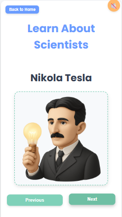
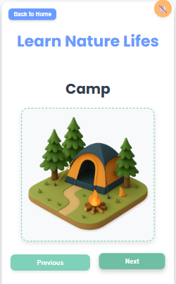

Our Learning Hub Just Got a Lot Bigger
We've been busy adding new reading pages to the World of Learning hub on Teachings.AI. Every page is written just for kids — short, friendly explanations, a "Fun Facts" box, and a quick quiz to check what they learned.


🔺 Shapes
From circles to hexagons to crescents — 12 shape pages covering sides, corners, and where to spot each shape in everyday life.
Explore Shapes →🔢 Numbers
Counting from 0 to 10, each with fun facts and real-world examples to make numbers stick.
Explore Numbers →🔬 Scientists
Meet Isaac Newton, Thomas Edison, Nikola Tesla, Charles Darwin, and more — the great minds who shaped our world.
Meet the Scientists →🌱 Plants
Sunflowers, cactus, bamboo, and more — how they grow, where they live, and what makes each one special.
Explore Plants →🫀 Body Organs
How the brain, heart, lungs, and stomach work together to keep us healthy — simple science made easy for little learners.
Explore the Human Body →🌳 Nature Explorer
Mountains, oceans, volcanoes, waterfalls, and more — 15 pages exploring our amazing planet.
Go Exploring →🏛️ Community Helpers
Firefighters, doctors, teachers, and librarians — who they are and how they help our neighborhoods every day.
Meet the Helpers →Every new page is free, ad-supported, and written specifically for preschool and kindergarten reading levels. Explore the whole hub and see what your child discovers next!